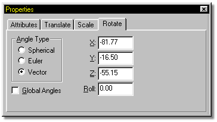

There are numerous reasons why you may want to rotate the Camera.
Spherical angles define camera rotations in Latitude, Longitude, and Roll, similar to Spherical Constraints.
Euler angles define X, Y, and Z camera rotations as an offset from the Z axis of the camera.
Vector angles define camera rotations where X, Y, and Z represent the vector direction of the Z axis. The Roll field allows you to roll the camera as it travels along a path. When Roll is used, the Camera will stay aimed at the target.
Changes to these fields (with the exception of Roll) will make no difference when an object is using an “Aim At” constraint.
Clicking in the Global Angles checkbox will show the numeric entries as global values, rather than local.
Related Topics:
Camera Visible
Cone Visible
Display Background Color
Background Color
TV/Title Safe
Focal Length
Focal Distance
Aperture
Fog Distance
Global Amibance
Camera Translate
Camera Scale
Front Projection Maps